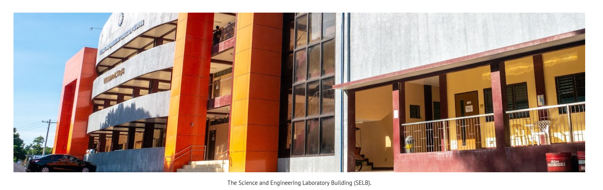

The Bachelor of Science in Civil Engineering Program was first proposed to be offered in Botolan Campus under the Self-Liquidating Program Scheme in early 2002 under the leadership of President Feliciano S. Rosete. The RMTU Board of Regents approved the proposal in early 2003 but Iba Campus was chosen as its venue on the issues of facilities and faculty to handle the program in Botolan Campus. The BSCE program started in the first semester of the school year 2003-2004 under the Institute of Evening Opportunity Programs with Prof. Cecilia A. Santiago as the Dean and close coordination with Engr. Liza M. Atienza, the Dean of the College of Engineering and Architecture.
BSCE had its first batch graduate in March 2008 with a seventy percent passing rate in the board examination. In 2010, the Board of Regents and the DBM approved its transfer to CEA as one of the RMTU regular programs. The BSCE received its Certificate of Program Compliance and level I AACCUP accreditation in 2016 and level II in 2019.
The Bachelor of Science in Computer Engineering in President Ramon Magsaysay State University began in the 2nd Semester of the Academic Year 2001-2002 when the then Ramon Magsaysay Technological University (RMTU) Board of Regents (BOR) approved the offering of self-liquidating degree programs in evening classes. The degree program was officially opened in the Academic Year 2002-2003 under the Institute of Evening Opportunity Program (IEOP) headed by Engr. Juvelyn M. Bueno as the first Program Chair. The first batch graduated in 2007.
In 2009, Engr. Melojean C. Marave was designated as the Program Chair. In 2012, Engr. Ricky S. Barrera assumed the Chairmanship of the program until 2017 which was then designated to Engr. Dionisio M. Martin, Jr. up to the present.
Due to the increasing population of students, the program was offered in Morning and Evening Sessions in AY 2004-2005 under the College of Communications and Information Technology (CCIT) and IEOP. The last batch of BSCpE in the IEOP graduated in 2012. From then on, the program was offered only in the CCIT. In 2018, in compliance with the recommendation of the Commission on Higher Education (CHED), the program was transferred under the College of Engineering (COE).
The Bachelor of Science in Electrical Engineering in the President Ramon Magsaysay State University began when the RMPC Board of Regents approved the curricula leading to the degrees of Bachelor of Science and Master of Science in Electrical Engineering. The degree program was officially opened, and the Department was first headed by Engr. Simon Jaring. The Department graduated its first batch of students in 2001, as one of oldest program in the College.
The Bachelor of Science in Mechanical Engineering in President RamonMagsaysay State University began when the RMPC Board of Regents approved the curricula leading to the degrees of Bachelor of Science and Master of Science in Mechanical Engineering. The degree program was officially opened and the department was first headed by Engr. Noel M. Dioyan. The department graduated its first batch of students in 2001, as one of oldest programs in the College.